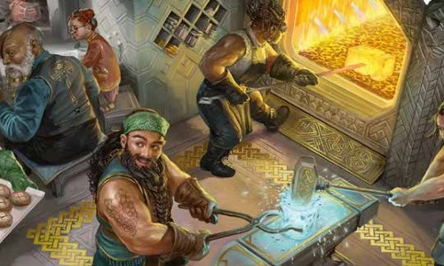

D&D-5.5-Wiki
Nós

Anão
Anões foram criados da terra nos tempos antigos por uma divindade da forja, conhecida por diversos nomes como Moradin e Reorx. Esse deus conferiu aos anões uma afinidade por pedra, metal e pela vida subterrânea, além de torná-los resilientes como as montanhas, com uma expectativa de vida de cerca de 350 anos.
Baixos e frequentemente barbudos, os anões origi nais esculpiram cidades e fortalezas nas montanhas e sob a terra. Suas lendas mais antigas relatam conflitos com monstros tanto do topo das montanhas quanto da Umbraeterna, sejam eles gigantes imponentes ou horrores subterrâneos. Motivados por essas histórias, anões de diversas culturas costumam cantar sobre proezas valentes — especialmente sobre os pequenos superando os poderosos.
Em alguns mundos do multiverso, os primeiros po voados de anões foram erguidos em colinas ou mon tanhas, e as famílias que descendem desses locais são conhecidas como anões da colina ou anões da monta nha. Os cenários de Greyhawk e Dragonlance incluem essas comunidades.
Traços de Anão
● Tipo de Criatura:
Humanoide.
● Tamanho:
Médio (cerca de 1,20-1,50 metro de altura)
● Deslocamento:
9 metros.
● Visão no escuro:
Você tem Visão no Escuro com um alcance de 36 metros.
● Resistência a Toxinas:
Você tem Resistência a Dano Venenoso. Você também tem Vantagem nas salvaguar das que realizar para evitar ou encerrar a condição Envenenado.
● Tenacidade Anã:
Seus Pontos de Vida máximos aumentam em 1, e novamente em 1, sempre que você atinge um nível de personagem.
● Conhecimento de Pedras:
. Como uma Ação Bônus, você adquire Sismiconsciência com um alcance de 18 metros por 10 minutos. Você deve estar em, ou tocar, uma superfície de pedra para usar a Sismiconsciência. A pedra pode ser natural ou trabalhada. Você pode usar essa Ação Bônus um número de ve zes igual ao seu Bônus de Proficiência, e você restaura todos os usos gastos quando completa um Descanso Longo.
Copyright@2025 DantaroProductions